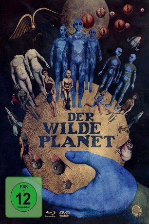

#9635 Der Wilde Planet
Alternativ: Fantastic Planet (Englischer Titel)
 
 IMDB-Wertung: 7.8 / 10
IMDB-Wertung: 7.8 / 10  Metascore: 0
Metascore: 0 
Auf dem fernen Planeten Ygam leben die menschenähnlichen primitiven „Oms“ und die gigantischen, hoch technologisierten „Draags“. Die Geschichte folgt dem jungen Om Terr, dessen Mutter von einem Draag in seinen Babyjahren getötet und dieser seitdem als Haustier gehalten wird. Dabei entwickelt Terr genügend Verständnis für Kultur und Technologie, um sich mit seinen Artgenossen gegen die Draags zur Wehr zu setzen.
Jahr: 1973
Dauer: 71 Minuten
FSK: 6
Land: Frankreich Studio: Laser ParadiseTonspuren:
Untertitel:
Auflösung: 1080p (1808x1080) Größe: 4474 MB
Genre: Sci-Fi, Animation/Trick
Regisseur: René Laloux
Drehbuch: Stefan Wul, Roland Topor, René Laloux
Soundtrack: Alain Goraguer
Darsteller:
- Max Amyl als Additional Voices
- Cynthia Adler als Tiwa (uncredited)
 Barry Bostwick als Adult Terr - Narrator (uncredited)
Barry Bostwick als Adult Terr - Narrator (uncredited)- Mark Gruner als Young Terr (uncredited)
- Marvin Miller als Great Tree Chief / Master Kon (uncredited)
 Hal Smith als Master Sinh / Old Om / Sorcerer (uncredited)
Hal Smith als Master Sinh / Old Om / Sorcerer (uncredited) Olan Soule als Master Taj (uncredited)
Olan Soule als Master Taj (uncredited)- Janet Waldo als Hollow Log Chief / Traag Child (uncredited)
- Jennifer Drake als Tiwa
- Eric Baugin als Young Terr
- Jean Topart als Master Sinh
- Jean Valmont als Adult Terr - Narrator
- Sylvie Lenoir als Additional Voices
- Michèle Chahan als Additional Voices
- Yves Barsacq als Om
- Hubert de Lapparent als Additional Voices
- Gérard Hernandez als Master Taj
- Claude Joseph als Additional Voices
- Philippe Ogouz als Additional Voices
- Jacques Ruisseau als Additional Voices
- Denis Boileau als Additional Voices
- Madeleine Clervanne als Additional Voices
- William Coryn als Additional Voices
- Poupy de Monneron als Additional Voices
- Christian de Tillière als Additional Voices
- Christian Echelard als Additional Voices
- Jeanine Forney als Additional Voices
- Pascal Kominakis als Additional Voices
- Andre Lambert als Additional Voices
- Mark Lesser als Additional Voices
- Serge Netter als Additional Voices
- Yvette Robin als Additional Voices
- André Rouyer als Additional Voices
- Irina Tarassov als Additional Voices
- Julien Thomas als Additional Voices
- Gilbert Vilhon als Additional Voices
- Paul Villé als Additional Voices
- Nora Heflin als Additional Voices (uncredited)
- Monika Ramirez als Additional Voices (uncredited)
Datei: X:\HD-Trick\Wilde Planet, Der (1973, FSK6, 1808x1080).mkv seit 25.09.2018
Festplatte: Kinder-Filme+Trick
 Es gibt insgesamt 28 Filme in der Gruppe 'HD-Trick'
Es gibt insgesamt 28 Filme in der Gruppe 'HD-Trick'